| [ Team LiB ] |
|
3.2 Linear State Space ModelsIn Chapter 2 we developed fundamental models, which were normally nonlinear in nature. We then developed state space models that were based on linearizing the fundamental models at a steady-state solution. This led to the notion of a perturbation or deviation variable, which is simply the perturbation of a variable from its steady-state value. State space models have the following form, where the states (x), inputs (u), and outputs (y) are all perturbation or deviation variables 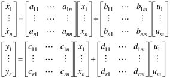 Recall that in matrix notation, the first subscript refers to the row and the second subscript refers to the column. When matrices multiply vectors, each row corresponds to a particular output of the multiplication, while the column corresponds to a particular input of the operation. Consider the C matrix, which relates the states to the outputs. Element cij relates the effect of state xj on output yi. The shorthand notation for Equation (3.1) is 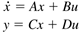 It is important to always check for dimensional consistency in matrix operations. In a matrix-vector operation y = Cx, the number of rows in C must be equal to the number of elements in y. Also, the number of columns in C must be equal to the number of elements in x. StabilityOne of the first basic concepts that we need to cover is the notion of stability. Consider a process where one or more states have been perturbed from the steady-state solution or operating point. The process is stable if after a period of time, the variables return to the steady-state values. This means that the state variables, since they are deviation variables, return to zero. Numerically, we can determine the stability of a state space model by finding the eigenvalues of the state space A matrix. Remember that the A matrix is simply the matrix of derivatives of the dynamic modeling equations with respect to the state variables. If all of the eigenvalues are negative, then the system is stable; if any single eigenvalue is positive, the system is unstable. A system with all but one eigenvalues negative and with one eigenvalue equal to zero is called an integrating system and is characteristic of processes with liquid levels or gas drum pressures that can vary. Examples of unstable systems are shown in Figure 3-2. If an eigenvalue is real and positive, the system response is that shown in the top curves. If there are complex conjugate eigenvalues, with positive real portions, the system oscillates (with ever increasing amplitude), as shown at the bottom. Figure 3-2. Unstable responses. (a) Monotonic and (b) oscillatory.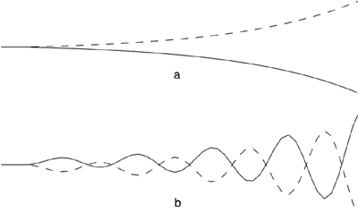 Mathematically, the eigenvalues of the A matrix are found from the roots of the characteristic polynomial 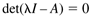 where l is known as an eigenvalue, and I is the identity matrix. For a state space model with n states, A is an n x n matrix, and there will be n solutions (eigenvalues) of Equation (3.3). There are analytical solutions for two- and three-state systems; the two-state solution is shown below. In two-state systems, 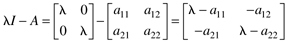 The determinant can be found by 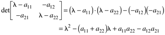 and the eigenvalues are found as the two solutions (roots) to 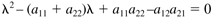 The roots can be found using the quadratic formula 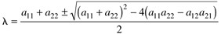 It is easy to show that if and a11 + a22 < 0 and a11a22 >a12a21, the roots (eigenvalues) are negative and the system is stable. A more general method of qualitatively checking the stability, known as the Routh stability criterion, is shown in Chapter 5. Example 3.1: Exothermic CSTRModels for an exothermic, CSTR are detailed in Module 8. For a two-state representation, the first state is the concentration and the second state is the reactor temperature. For a particular reactor with two different operating conditions, the A matrix is (the time unit is hours)
and the eigenvalues for operating condition 1 can be found using the following steps 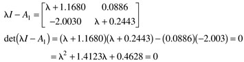 with the solutions [using the quadratic formula (3.5)] 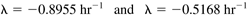 Since both eigenvalues are negative, operating condition 1 is stable. The reader should show that the eigenvalues of A2 are 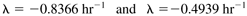 where the positive eigenvalue indicates that operating condition 2 is unstable. MATLAB Eigenvalue FunctionThe MATLAB eig command can be used to quickly find eigenvalues of a matrix. The reader should use the MATLAB command window to verify the following results for the second operating condition: » a2 = [-1.8124 -0.2324;9.6837 1.4697]; » eig(a2) ans = -0.8366 0.4939 Again, the positive eigenvalue indicates that the second operating condition is unstable. GeneralizationNotice that a solution of a second-order polynomial was required to find the eigenvalues of the two-state example; this resulted in two eigenvalues. For the general case of an n x n matrix, there will be n eigenvalues. It is too complex to find these analytically for all but the simplest low-order systems. The simplest way to find eigenvalues is by using existing numerical analysis software; for example, in MATLAB the eig function can be used to find eigenvalues. The values of the eigenvalues are related to the "speed of response," and the eigenvalue unit is inverse time. If the unit of time used in the differential equations is minutes, for example, then the eigenvalues have min-1 as the unit. For stable systems (where all eigenvalues are negative), the larger magnitude (more negative) eigenvalues are faster. For matrices that are 2 x 2 or larger, some eigenvalues may occur in complex conjugate pairs. In this case, the stability is determined by the sign of the real portion of the complex number. As long as all real portions are negative, the system is stable. |
| [ Team LiB ] |
|